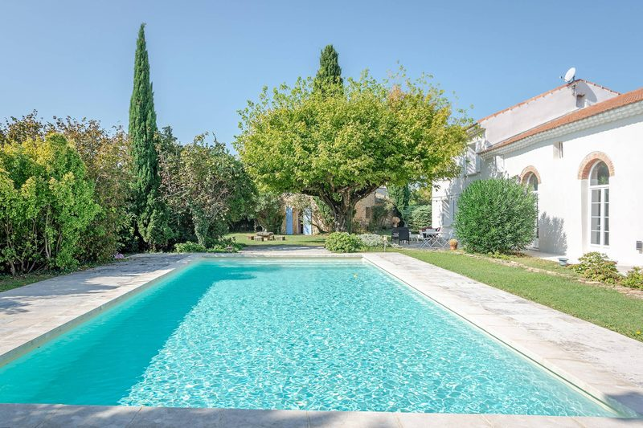
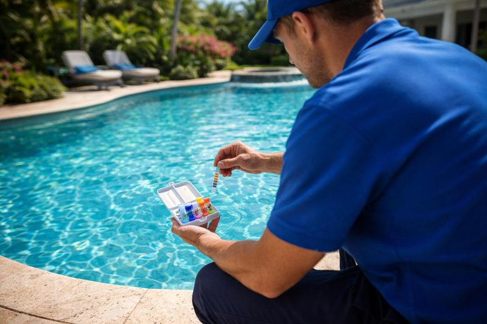
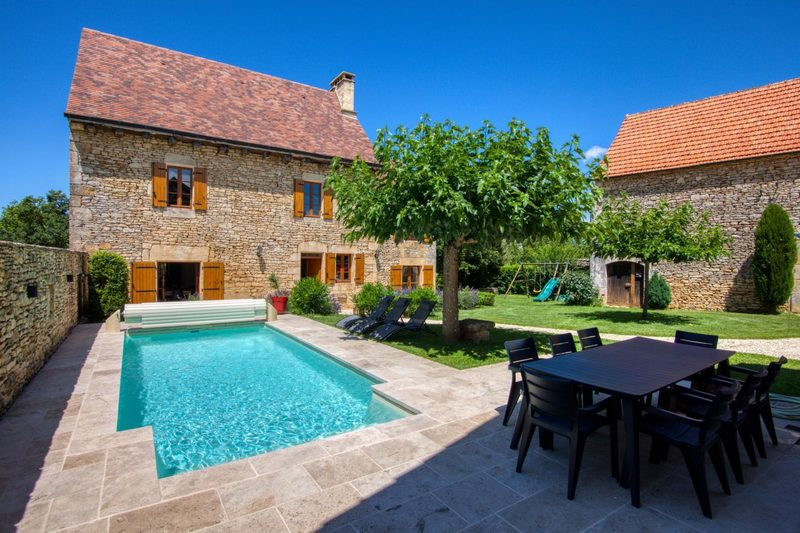
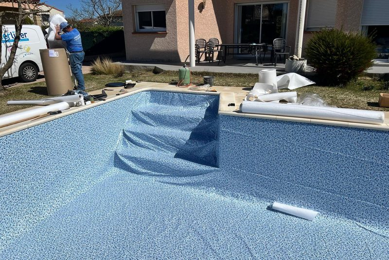
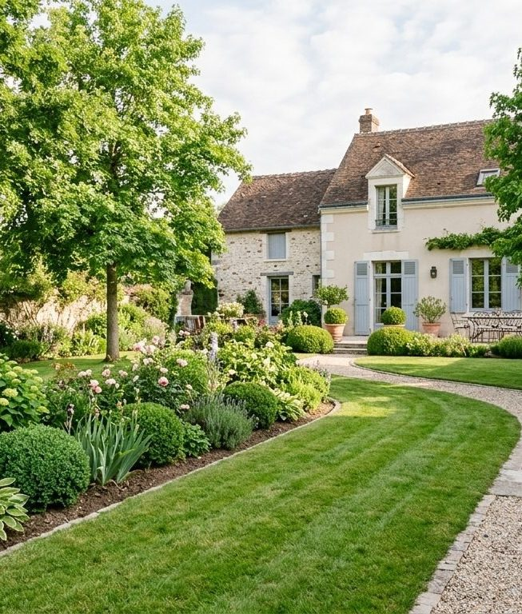
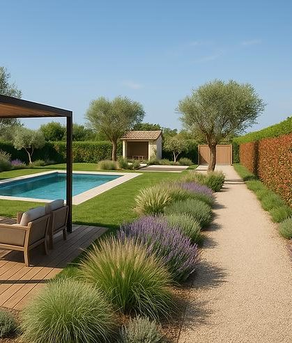
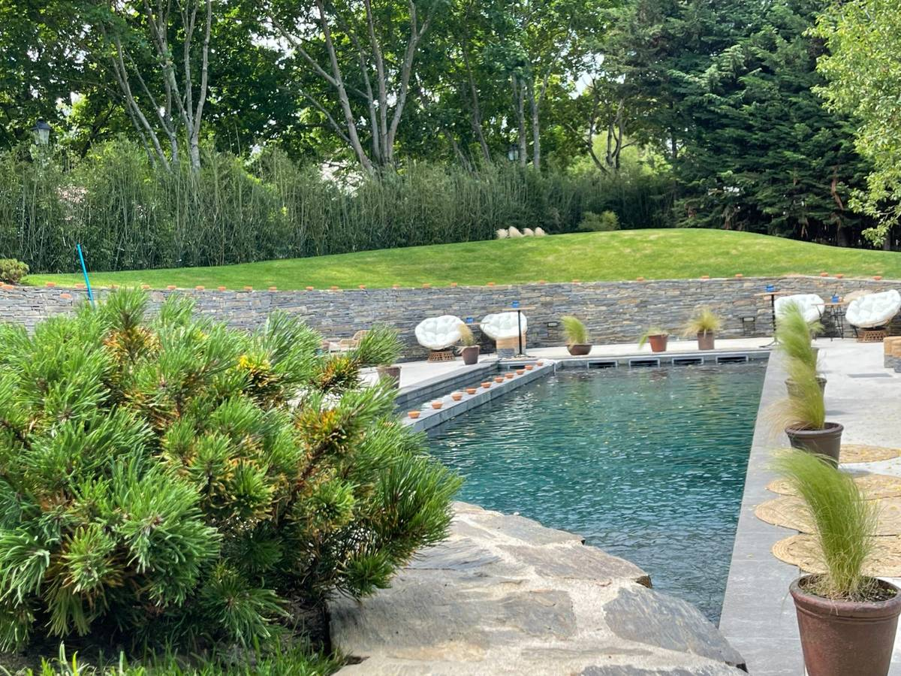
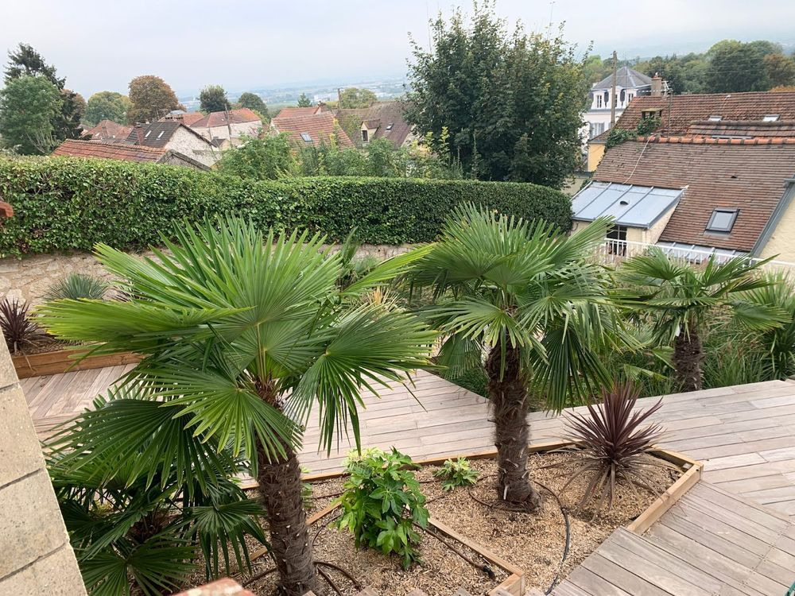
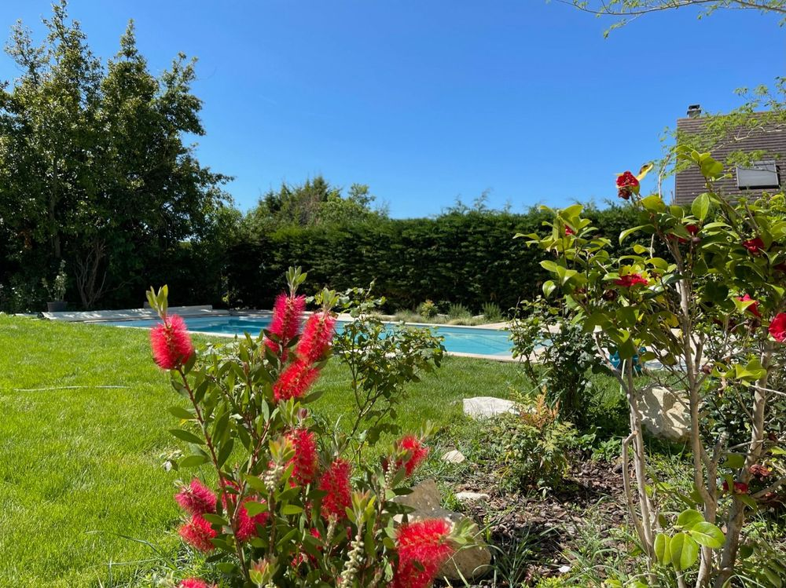

Entretien de piscines
Un suivi régulier pour que la piscine reste un plaisir et non une corvée.
AquaPro Piscine et Paysage, installée à Goussonville, s'occupe de l'entretien de votre piscine et de votre jardin : hivernage, rénovation, traitement de l'eau, espaces verts.
Entretien régulier, traitement, hivernage et rénovation : un seul interlocuteur pour votre piscine. Photos d'illustration.

Un suivi régulier pour que la piscine reste un plaisir et non une corvée.

Un traitement professionnel pour une eau équilibrée et translucide.

Préparer le bassin pour la saison froide afin de le protéger.

Rénovation de piscines et de bassins, changement de liner.
Piscine chauffée pour se détendre, couloir de nage froid pour le sport : nous adaptons nos prestations à tous types de réalisations.


Quelques photos publiées par l'entreprise.



Décrivez-nous votre projet ou votre besoin d'entretien : nous vous répondons rapidement.